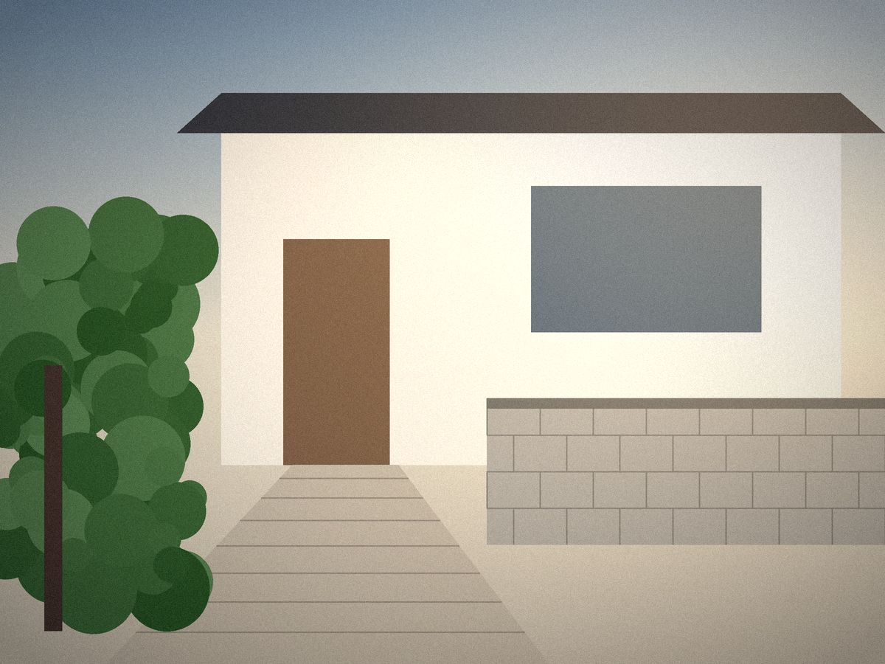
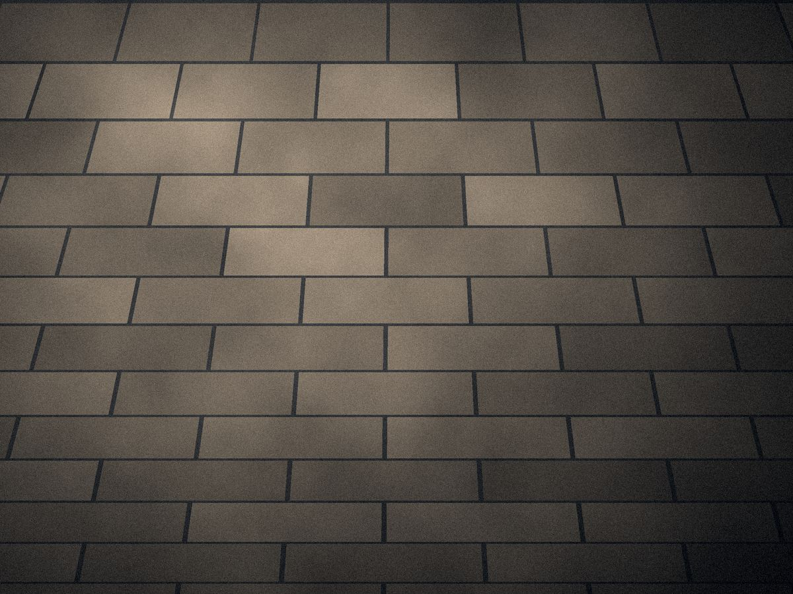
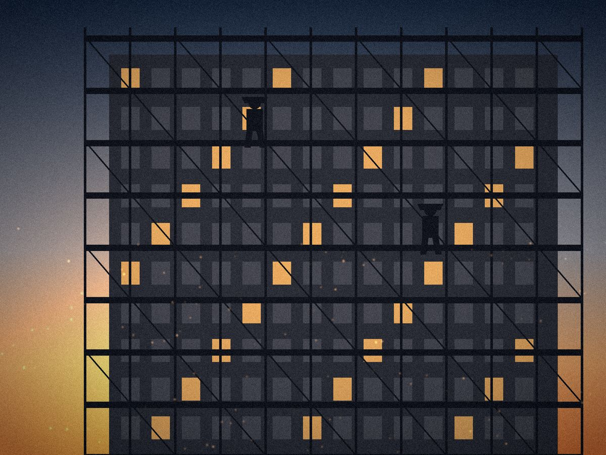
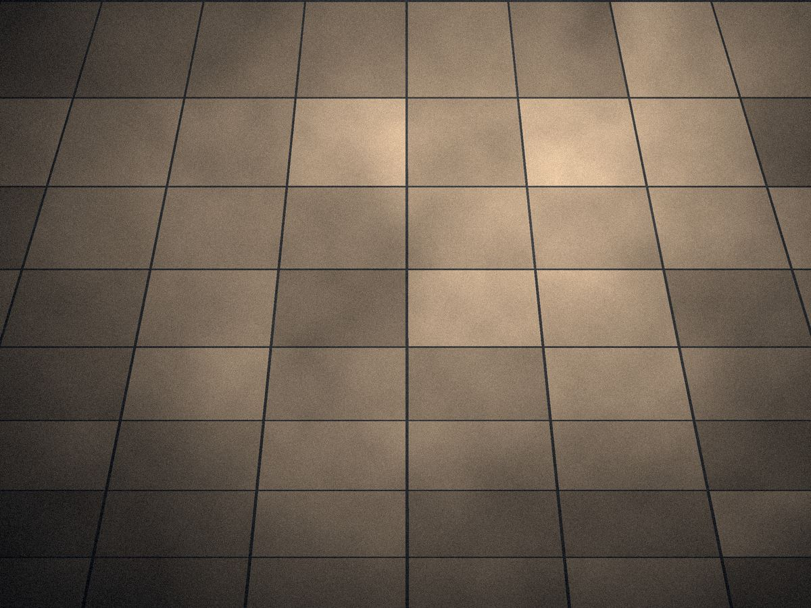

01CIVIL ENGINEERING
土木工事業
道路・造成・上下水道・河川など、地域の暮らしを支えるインフラ工事を担います。重機オペレーションから丁寧な仕上げまで、確かな施工でお応えします。
詳しく見るTEL/FAXデモ非表示
福岡県北九州市若松区塩屋1丁目11-10
EXTERIOR WORKS / CIVIL ENGINEERING
北九州・若松から、土木・外構工事を中心に
地域のインフラと暮らしを支えます。
※写真はイメージ（仮）です
ABOUT US01
株式会社RISEは、福岡県北九州市若松区を拠点に、土木工事・外構工事を中心として幅広い工事を手がける建設会社です。
道路や造成といった地域の基盤づくりから、住まいの外構、タイル・ブロック工事、さらにはハウスクリーニングや清掃管理まで。「つくる」から「整える」までを一貫してお任せいただける体制で、お客様の大切な現場に向き合っています。
規模の大小にかかわらず、すべての現場で安全と品質を最優先に。元請け企業様から信頼されるパートナーであり続けることを目指します。
※紹介文は営業提案用のサンプルです。内容は後から変更できます。
会社案内を見る
土木・外構から仕上げ、清掃まで。工程ごとの業者手配が不要です。
日々のKY活動と整理整頓を徹底し、無事故の現場づくりに努めます。
北九州エリアを中心に、迅速な対応とフットワークの軽さが強みです。
SERVICE02
地域の基盤をつくる土木工事から、暮らしを整えるクリーニングまで。
5つの事業で、お客様のあらゆるご要望にお応えします。
01CIVIL ENGINEERING
道路・造成・上下水道・河川など、地域の暮らしを支えるインフラ工事を担います。重機オペレーションから丁寧な仕上げまで、確かな施工でお応えします。
詳しく見る02TILE / BRICK / BLOCK
門柱・塀・アプローチなどの外構を中心に、タイル・レンガ・ブロックを美しく積み上げます。耐久性とデザイン性を両立した仕上がりをご提案します。
詳しく見る04SCAFFOLDING / CONCRETE
足場の組立・解体、掘削・埋戻し、基礎や土間のコンクリート打設まで。現場の土台となる工程を、安全かつスピーディーに施工します。
詳しく見る※事業説明文はサンプルです。写真はすべてイメージ（仮）です。
WORKS03

SAMPLE 外構工事
SAMPLE ブロック工事
SAMPLE とび工事
SAMPLE タイル工事PHILOSOPHY04
誠実な仕事が、 信頼を築き、 未来をつくる。
SINCERITY
お客様と現場に、まっすぐ向き合う。約束を守り、嘘のない仕事をします。
QUALITY
見えない部分こそ丁寧に。長く安心して使える品質を追求します。
CHALLENGE
新しい技術と働き方に挑み、会社も人も成長し続けます。
※企業理念の文章は仮のサンプルです。
RECRUIT
未経験からでも一人前の職人へ。採用情報は準備が整い次第掲載します。
CONTACT
元請け様・協力会社様からのご依頼、個人のお客様からのご相談まで承ります。
DEMO
本サイトは提案用デモです。お問い合わせの送信・電話の発信は行われません。